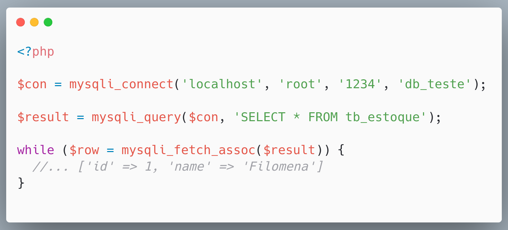
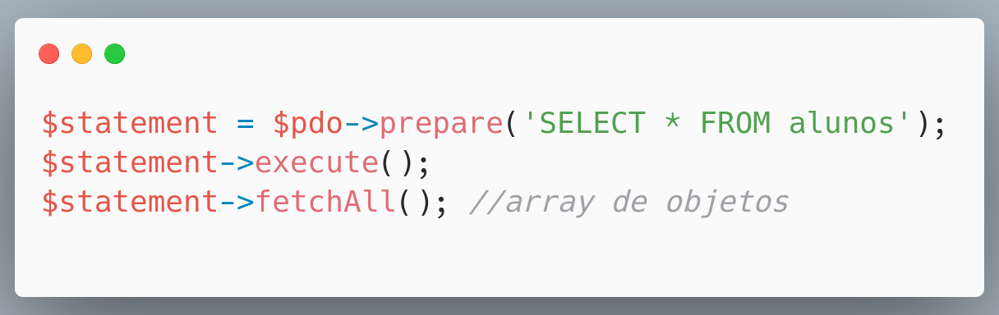
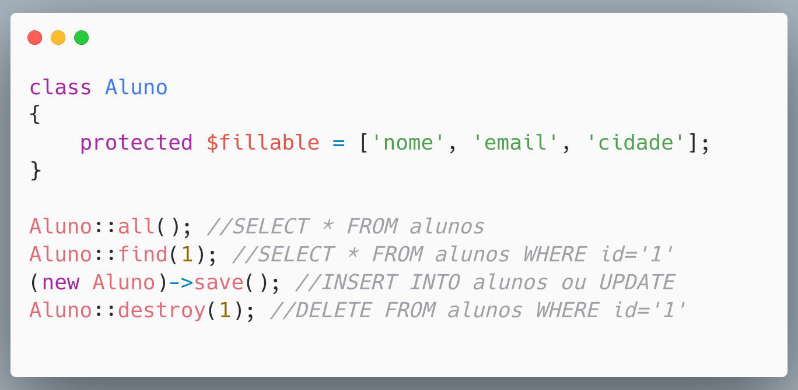
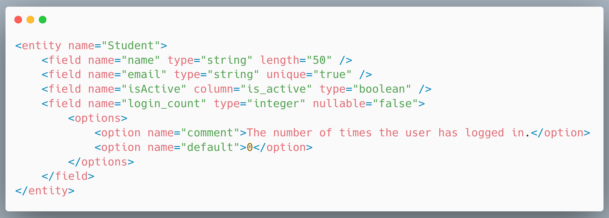
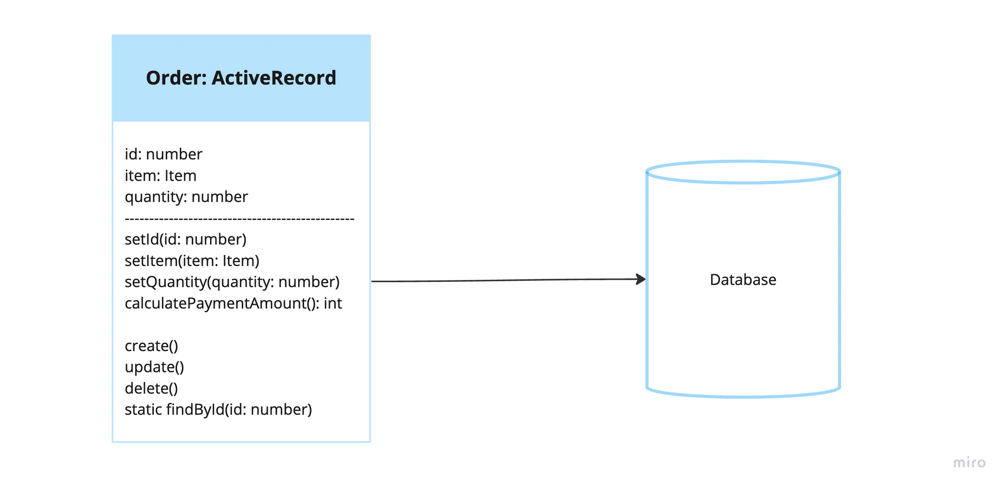
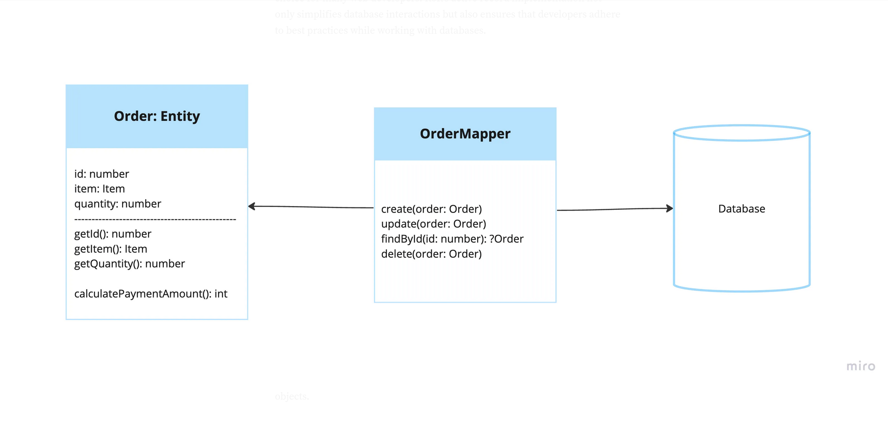
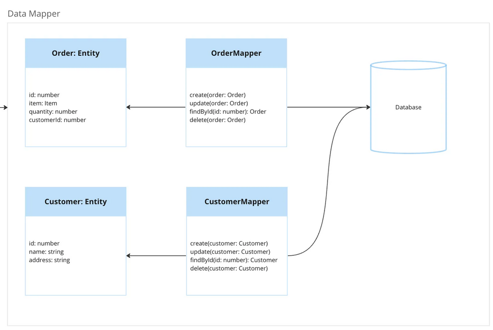
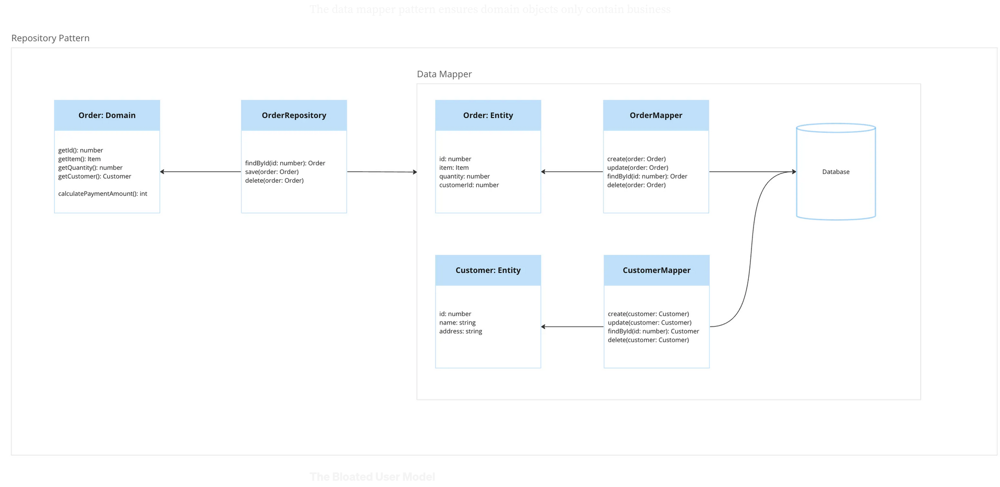

Database Patterns
O que se DEV saber para dizer que conhece
Quem sou eu?
Alessandro Feitoza
- Professor de códigos e outras computarias
- Programador/Dev/Severino
A questão é:
Fazer nosso código acessar o banco
Opções
- PHP Mundano
- Active Record
- Data Mapper
- Repository Pattern*
PHP Mundano
- Esquema do banco - Feito manualmente por fora da aplicação
- Performático* - Não existe nenhuma camada entre o seu código e o banco
MySQLi
PDO
ACTIVE RECORD
- Model/Modelo - Uma classe que representa um registro em uma tabela
- Acoplamento Forte - Está diretamente ligado ao esquema
- Fácil/Rápido - Não é necessário criar os principais métodos
Active RecordUm objeto que envolve uma linha em uma tabela ou exibição de banco de dados, encapsula o acesso ao banco de dados e adiciona lógica de domínio a esses dados. |

|
ELOQUENT (Active Record)
- PHP - O Laravel o traz por padrão
- ORM - Object Relational Mapper
- Bancos - MySQL, PostgreSQL, MS SQL Server, SQLite...
- Atributos/Colunas - São definidos em uma classe de modelo
Eloquent
DATA MAPPER
DATA MAPPER
- Entity/Entidade - Uma classe que apenas modela um registro em uma tabela
- Acoplamento Fraco - Há uma camada a parte para consumir o banco (SoC)
- Menos Fácil/Menos Rápido - fornece uma robustez maior, que pode ser entendido como barreira
DOCTRINE (Data Mapper)
- PHP - Doctrine (O Symfony* o usa por padrão)
- ORM - Object Relational Mapper
- DBAL - Database Abstraction Layer
- Bancos - MySQL, PostgreSQL, MS SQL Server, SQLite...
- Atributos/Colunas - São definidos em uma classe de modelo ou XML/YAML isolado*
Doctrine

Doctrine (XML)
Active Record
Data Mapper
Data Mapper
Repository
DÚVIDAS?
Referências
@alessandro_feitoza
https://linkedin.com/in/AlessandroFeitoza
https://alessandrofeitoza.github.io/slides